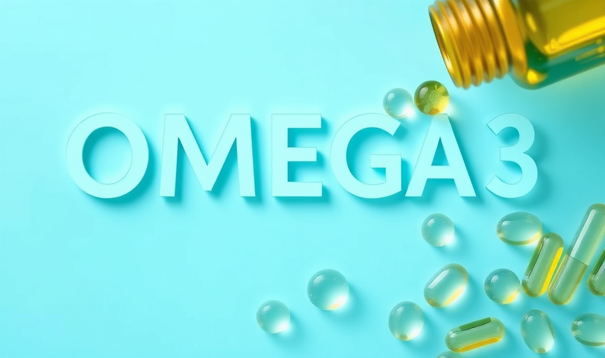

Real information. No fluff.
Science-backed, honestly written, and always from experience. Filter by topic or search for what's on your mind.

I'm Rubbing My Oestrogen Gel on My Achilles. Here's What the Science Says
Two weeks of trialling it on a stubborn Achilles, plus what the research on HRT and joints actually shows.
Read article →
The Menopause Face Cream I Now Buy Myself
I nearly gave up on it because of the scent. Now it's my favourite two minutes of the morning.
Read article →
The 2pm Sugar Crash: Why Perimenopause Hijacks Your Blood Sugar
It's not a willpower problem. It's a cortisol and oestrogen problem — and once you understand that, everything changes.
Read article →Brain Fog & Sleep: What's Actually Going On — and What Can Help
I was desperate, so here's the facts. The science, the supplements, and what actually moves the needle.
Read article →
Why Can't I Sleep? Perimenopause, Insomnia & What Actually Works
Lying awake with a brain that won't switch off. What's happening, what actually helps, and what I built when nothing else was good enough.
Read article →
Perimenopause Starts Earlier Than You Think — And NZ Women Are Being Missed
Three doctors. All women. Not one said the word. What I learned after I worked it out myself.
Read article →
The Magnesium Gap — Why Most NZ Women in Perimenopause Are Deficient
Oestrogen helps your cells hold magnesium. As it drops, so does magnesium — right when you need it most.
Read article →
The Vitamin D Problem Nobody Is Talking About — And Why It Hits NZ Women Hardest
Great sun safety culture, unexpected consequence. NZ women's vitamin D levels are consistently below optimal.
Read article →
Creatine — The Super Supplement Every Women's Health Expert Is Raving About
Stacy Sims calls it number one. Steven Bartlett devoted two episodes to it. The 2025 science is extraordinary.
Read article →
The NZ Brain Health Secret — Blackcurrants and Pine Bark Beating Global Supplements
The most researched cognitive health ingredients on the planet grow right here. Most NZ women have never heard of them.
Read article →
Know Your Body — How Fertility Trackers and the Oura Ring Are Changing Women's Health
What you can learn about your cycle, fertility and perimenopause from a ring on your finger while you sleep.
Read article →
The NZ Soil Advantage — Why Getting Your Greens In Has Never Mattered More
Our soil grows the most nutrient-dense produce on earth. But most of us still aren't getting enough.
Read article →
The Complete Women Over 40 Supplement Stack — What Works, What Doesn't, Where to Start
Four years of reading the actual science. The honest, evidence-ranked guide to supplements that matter.
Read article →
Omega-3s and Perimenopause — Why Your Fish Oil Probably Isn't Working
The oxidation problem nobody talks about, TG vs EE form, and what to actually look for in a fish oil.
Read article →
Is It Anxiety or Perimenopause? How I Spent Two Years Being Treated for the Wrong Thing
The 3am dread. The racing heart. The objectless doom. I was prescribed an SSRI. It wasn't anxiety. What your symptoms are really telling you.
Read article →
Cortisol and the Female Brain — What's Actually Happening When You Feel Wired, Exhausted, and Overwhelmed
The science of why 35+ changes everything — and the five practical steps that actually move the needle.
Read article →
Inflammation and Anxiety: The Connection Nobody's Talking About
The emerging science of the inflammation-anxiety loop — and what it means for women navigating hormonal shifts.
Read article →
Protein for Women — What You Actually Need and How to Find One That Doesn't Taste Like Cardboard
Collagen, pea, whey — the options are overwhelming. Most taste terrible. The complete honest guide.
Read article →
The Handles — The Kick-Ass North Shore Women Showing Us How It's Done
What happens when women stop watching from the sidelines and start living. A North Shore story every NZ woman needs to read.
Read article →
I Had a Baby at 40. Here's Every Single Thing That Finally Helped — And Why You Can't Wait.
I worked inside a fertility clinic and still spent two years trying. The exact supplements, doses, and honest science.
Read article →
The Bloating Article I Wish Someone Had Written For Me — What Actually Works, What Doesn't, and Why the Ads Are Lying to You
Hormonal, uncomfortable, and one of the most under-discussed symptoms. The honest, evidence-ranked guide to what actually helps.
Read article →
The Plastic Problem — What Every New Zealand Woman Needs to Know About Plastics, Microplastics, and Your Hormones
Every week you ingest around five grams of plastic. Emerging science suggests women face particular risks. The practical steps that make a real difference.
Read article →What should Sarah and the VelaOra team review next?
A product, a class, a supplement, a symptom. One word is enough and we'll look into it.
No email needed.
No articles match that yet. Try another word, or tell Sarah what you'd like her to write about.